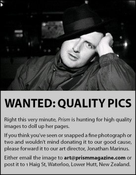

Skip ahead to:

Editorial
Loyalty is a huge topic, and the aim of this issue is not to cover it (no magazine could), but simply to use it as a bouncing-off point. What does loyalty mean in film, in art, in life?
Loyalty itself is pretty simple, but sometimes the decisions we have to make aren’t exactly cut and dried. Even with printing Prism, for instance, we had to ask some hard questions. Should we remain loyal to the (more expensive) printers we started with? Should we aim for “loyalty to quality”, and go for the best print quality, regardless of cost? Or perhaps get them done as cheaply as possible so we can print twice as many and give away the spares, showing our loyalty to the “Prism cause”? Even as I write this the final decision hasn’t been made …
Our new blog
In website news, Bryan Hoyt has recently made us a shiny new blog tailored for Prism. “In between issues” is where we’ll be posting updates and thoughts from now on, sometimes directly Prism-related, sometimes not. We’ll try to post new items once or twice a week. The new blog’s much easier to use than the old discussion forum, so browse to /blog/ and have your say!
If you’re not sure what a “blog” is, it’s short for “web log”, and basically it’s a place where a few people write posts about various things, and anyone who wants can add comments to a post. They’re good for sharing interesting links and lively discussions.
The content
We had great plans for a feature interview with Kiwi music icon Dave Dobbyn about his album Loyal, but alas, he was too busy. Even Tim Sterne sweet-talking Dobbyn’s PA didn’t seem to help. Maybe another time. But Tim’s review of Available Light, Dobbyn’s latest album, almost makes up for it – even I want to fork out some money to buy it and have a listen.
We’ve also got a neat story by writer Joanna Beresford, who lives in Masterton with her husband Ben. She’s part mother, part writer, and is currently writing a novel based on the life of a prominent figure in Masterton history.
Then, among other things, there’s film reviews, down-to-earth food and gardening info, wheels and sport columns, and thoughts and paintings by Christchurch artist Jason Flinn. The articles are strung together by our theme of loyalty.
Once again, we’re calling for writers (not to mention photographers)! Remember, you don’t have to be a pro (none of us are) – you just need an idea and the passion to run with it. We know lots of talent hides in cracks, so if you’ve got an idea or you know someone that does, please contact us. We don’t pay out $250 for your funny stories, but you could have the satisfaction of showing your friends your name in print.
So do have a good read. As usual, we welcome letters to the editor. If you have some feedback you’d like published, write in!
Contributors
- Arahanga family
- John & Hettie Arends
- Janette Bartlett
- Matthew Bartlett
- Joanna Beresford
- Wendell Berry
- Maricha Dekker
- T Jason Flinn
- Liana Havelaar
- Hannah Holder
- Berwyn Hoyt
- Franci Hoyt
- Kelly M.
- Jonathan M.
- Trent Maynard
- Daniel McClelland
- Nick Moroder
- Alex Quistberg
- Genevieve Smith
- Lara Sorgo
- Tim Sterne
- Aaron Stewart